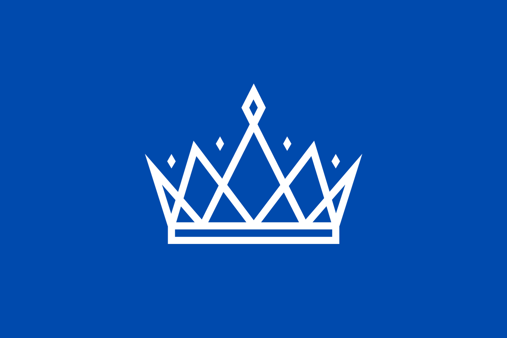

@rotting_sweet

Yggdrasil


Ningen est le pays d'Yggdrasil qui a le climat le plus tempéré : des forêts, quelques montagnes, des plaines.
Ses saisons se divisent en quatre, et pourraient être assimilées à celles que nous connaissons : été, automne, hiver, et printemps.
Cette zone est peu touchée par les catastrophes naturelles, contrairement à Dùath.
Sa population est uniquement composée d'humains.
Dépourvus de magie, ils sont donc plus portés vers le développement de la technologie mécanique, comme des véhicules et engins de siège par exemple.
Leurs montagnes leur permettent également de compenser le déséquilibre de puissance qu'il existe entre les humains et les peuples dotés de magie grâce au minerais qu'on ne peut trouver que là-bas : le Straolium.
Ce métal gris sombre se reconnaît par ses reflets mauves bleutés étincelant.
Il se distingue par sa robustesse hors du commun, et surtout par sa capacité à reprendre se forme initiale après un choc puissant.
Cela permet aux humains de forger des armures d'une résistance folle et d'une efficacité terrifiante.
Étant de plus très léger, cela en fait un matériau précieux pour la race humaine, qui en ont d'ailleurs l'exclusivité.
Bien que, comme dit plus haut, les humains ne possèdent pas de magie et la rejette même violemment, certains humains particuliers font exception à la règle : on peut trouver des sorcier•e•s, nécromancien•ne•s, guérisseur•se•s, et télépathes.
Ces humains particuliers sont appelés des Hérétiques, et la répression à leur encontre est d'une violence inouïe.
Les rares chanceux à ne pas avoir encore été retrouvés et exécutés s'enfuient de Ningen, vers Atisha, le seul pays pouvant les accueillir.
Ils sont malgré tout encore chassés par l'armée Ningenienne et ses Brigades Anti-Hérétiques, et ce, même si le gouvernement d'Atisha condamne ses agissements.
Ainsi, le gouvernement de Ningen réside en un trône, celui du Roi, sur lequel siège Adasi Helian.
Sa monarchie est patriarcale et héréditaire.
La dynastie actuelle, la famille Helian, est en place depuis plus de 300 ans, celle là même qui a débuté la chasse aux Hérétiques.

La langue officielle de Ningen est la langue commune.
Elle est parlée par une forte majorité des habitants d'Yggdrasil, étant le seul moyen de converser entre différentes espèces.
Aucun humain ne connaît une autre langue que celle là.
La religion est un point central de la société ningenienne.
Elle est nationale et commune à chaque habitant.
Quiconque ne s'y conformerait pas est accusé d'hérétisme.
Elle repose sur cinq Dieux, incarnés par les cinq lunes gravitant autour d'Yggdrasil :
- Le Soldat est la lune blanche, appelée par les autres peuples Nyr. Il représente le courage, et est porteur de persévérance, de motivation, d'endurance.
- La Mère est la lune verte, communément appelée Yx. Elle est la personnification de la bonté, et apporte avec elle guérison, paix, rêves et espérance.
- Le Père est la lune rougeoyante, aussi appelée Ranyr. Il représente la force, apportant la puissance et la robustesse.
- L'Amant est la lune rose, dénommée Xara par le reste des habitants d'Yggdrasil. Il est symbole de l'amour, et amène un message de calme, de douceur et de gentillesse.
- Le Conseiller est la lune bleue, également appelée Fyr. Quant à lui, il incarne l'intelligence, apportant la sagesse et le savoir.